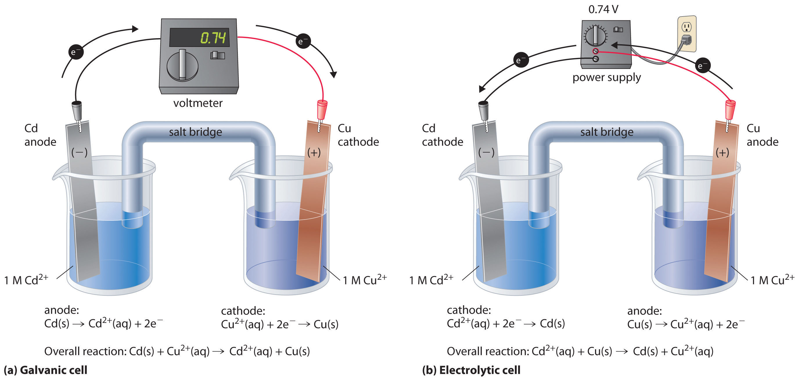
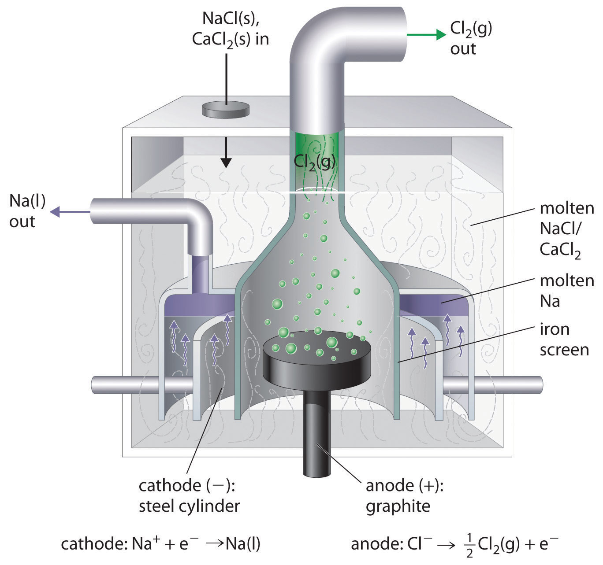
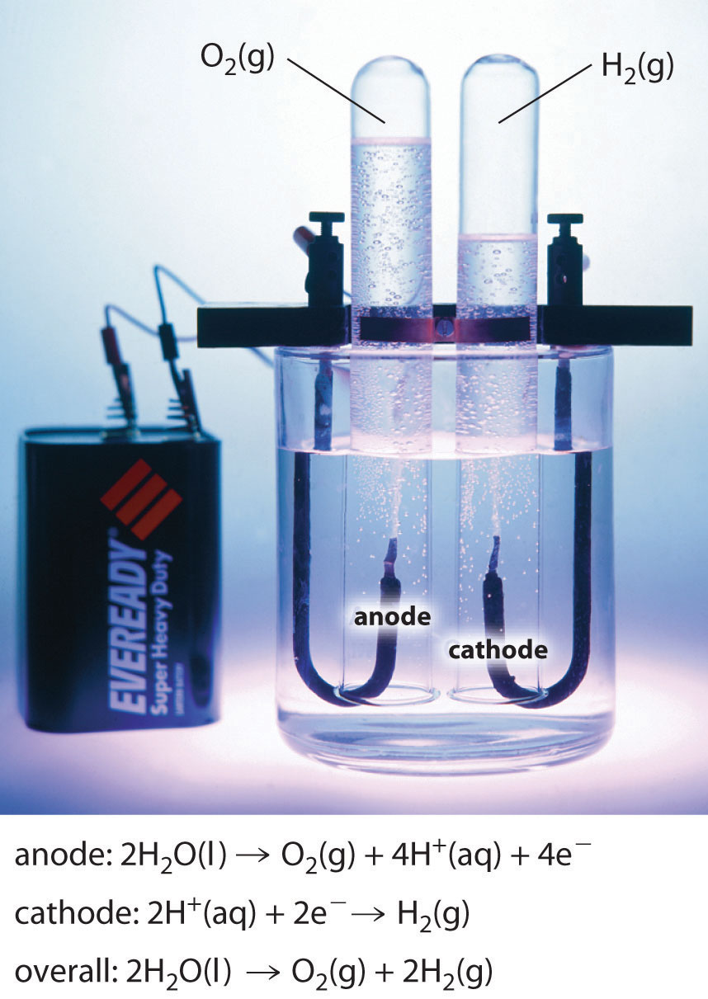
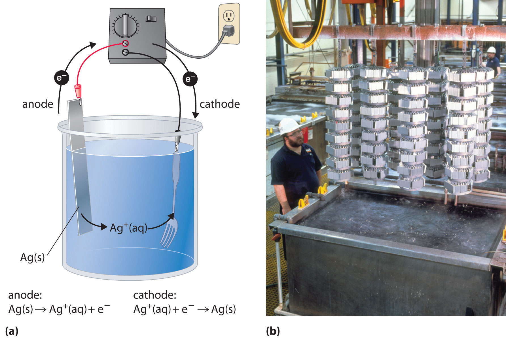

In this chapter, we have described various galvanic cells in which a spontaneous chemical reaction is used to generate electrical energy. In an electrolytic cell, however, the opposite process, called electrolysisAn electrochemical process in which an external voltage is applied to an electrolytic cell to drive a nonspontaneous reaction., occurs: an external voltage is applied to drive a nonspontaneous reaction (Figure 19.1 "Electrochemical Cells"). In this section, we look at how electrolytic cells are constructed and explore some of their many commercial applications.
In an electrolytic cell, an external voltage is applied to drive a nonspontaneous reaction.
If we construct an electrochemical cell in which one electrode is copper metal immersed in a 1 M Cu2+ solution and the other electrode is cadmium metal immersed in a 1 M Cd2+ solution and then close the circuit, the potential difference between the two compartments will be 0.74 V. The cadmium electrode will begin to dissolve (Cd is oxidized to Cd2+) and is the anode, while metallic copper will be deposited on the copper electrode (Cu2+ is reduced to Cu), which is the cathode (part (a) in Figure 19.21 "An Applied Voltage Can Reverse the Flow of Electrons in a Galvanic Cd/Cu Cell"). The overall reaction is as follows:
Equation 19.103
This reaction is thermodynamically spontaneous as written (ΔG° < 0):
Equation 19.104
In this direction, the system is acting as a galvanic cell.
Figure 19.21 An Applied Voltage Can Reverse the Flow of Electrons in a Galvanic Cd/Cu Cell
(a) When compartments that contain a Cd electrode immersed in 1 M Cd2+(aq) and a Cu electrode immersed in 1 M Cu2+(aq) are connected to create a galvanic cell, Cd(s) is spontaneously oxidized to Cd2+(aq) at the anode, and Cu2+(aq) is spontaneously reduced to Cu(s) at the cathode. The potential of the galvanic cell is 0.74 V. (b) Applying an external potential greater than 0.74 V in the reverse direction forces electrons to flow from the Cu electrode [which is now the anode, at which metallic Cu(s) is oxidized to Cu2+(aq)] and into the Cd electrode [which is now the cathode, at which Cd2+(aq) is reduced to Cd(s)]. The anode in an electrolytic cell is positive because electrons are flowing from it, whereas the cathode is negative because electrons are flowing into it.
The reverse reaction, the reduction of Cd2+ by Cu, is thermodynamically nonspontaneous and will occur only with an input of 140 kJ. We can force the reaction to proceed in the reverse direction by applying an electrical potential greater than 0.74 V from an external power supply. The applied voltage forces electrons through the circuit in the reverse direction, converting a galvanic cell to an electrolytic cell. Thus the copper electrode is now the anode (Cu is oxidized), and the cadmium electrode is now the cathode (Cd2+ is reduced) (part (b) in Figure 19.21 "An Applied Voltage Can Reverse the Flow of Electrons in a Galvanic Cd/Cu Cell"). The signs of the cathode and the anode have switched to reflect the flow of electrons in the circuit. The half-reactions that occur at the cathode and the anode are as follows:
Equation 19.105
Equation 19.106
Equation 19.107
Because E°cell < 0, the overall reaction—the reduction of Cd2+ by Cu—clearly cannot occur spontaneously and proceeds only when sufficient electrical energy is applied. The differences between galvanic and electrolytic cells are summarized in Table 19.3 "Comparison of Galvanic and Electrolytic Cells".
Table 19.3 Comparison of Galvanic and Electrolytic Cells
| Property | Galvanic Cell | Electrolytic Cell |
|---|---|---|
| ΔG | < 0 | > 0 |
| E cell | > 0 | < 0 |
| Electrode Process | ||
| anode | oxidation | oxidation |
| cathode | reduction | reduction |
| Sign of Electrode | ||
| anode | − | + |
| cathode | + | − |
At sufficiently high temperatures, ionic solids melt to form liquids that conduct electricity extremely well due to the high concentrations of ions. If two inert electrodes are inserted into molten NaCl, for example, and an electrical potential is applied, Cl− is oxidized at the anode, and Na+ is reduced at the cathode. The overall reaction is as follows:
Equation 19.108
2NaCl(l) → 2Na(l) + Cl2(g)This is the reverse of the formation of NaCl from its elements. The product of the reduction reaction is liquid sodium because the melting point of sodium metal is 97.8°C, well below that of NaCl (801°C). Approximately 20,000 tons of sodium metal are produced commercially in the United States each year by the electrolysis of molten NaCl in a Downs cell (Figure 19.22 "A Downs Cell for the Electrolysis of Molten NaCl"). In this specialized cell, CaCl2 (melting point = 772°C) is first added to the NaCl to lower the melting point of the mixture to about 600°C, thereby lowering operating costs.
Figure 19.22 A Downs Cell for the Electrolysis of Molten NaCl
The electrolysis of a molten mixture of NaCl and CaCl2 results in the formation of elemental sodium and chlorine gas. Because sodium is a liquid under these conditions and liquid sodium is less dense than molten sodium chloride, the sodium floats to the top of the melt and is collected in concentric capped iron cylinders surrounding the cathode. Gaseous chlorine collects in the inverted cone over the anode. An iron screen separating the cathode and anode compartments ensures that the molten sodium and gaseous chlorine do not come into contact.
Similarly, in the Hall–Heroult process used to produce aluminum commercially, a molten mixture of about 5% aluminum oxide (Al2O3; melting point = 2054°C) and 95% cryolite (Na3AlF6; melting point = 1012°C) is electrolyzed at about 1000°C, producing molten aluminum at the cathode and CO2 gas at the carbon anode. The overall reaction is as follows:
Equation 19.109
2Al2O3(l) + 3C(s) → 4Al(l) + 3CO2(g)Oxide ions react with oxidized carbon at the anode, producing CO2(g).
There are two important points to make about these two commercial processes and about the electrolysis of molten salts in general.
In the Hall–Heroult process, C is oxidized instead of O2− or F− because oxygen and fluorine are more electronegative than carbon, which means that C is a weaker oxidant than either O2 or F2. Similarly, in the Downs cell, we might expect electrolysis of a NaCl/CaCl2 mixture to produce calcium rather than sodium because Na is slightly less electronegative than Ca (χ = 0.93 versus 1.00, respectively), making Na easier to oxidize and, conversely, Na+ more difficult to reduce. In fact, the reduction of Na+ to Na is the observed reaction. In cases where the electronegativities of two species are similar, other factors, such as the formation of complex ions, become important and may determine the outcome.
If a molten mixture of MgCl2 and KBr is electrolyzed, what products will form at the cathode and the anode, respectively?
Given: identity of salts
Asked for: electrolysis products
Strategy:
A List all the possible reduction and oxidation products. Based on the electronegativity values shown in Figure 7.5 "Definitions of the Atomic Radius", determine which species will be reduced and which species will be oxidized.
B Identify the products that will form at each electrode.
Solution:
A The possible reduction products are Mg and K, and the possible oxidation products are Cl2 and Br2. Because Mg is more electronegative than K (χ = 1.31 versus 0.82), it is likely that Mg will be reduced rather than K. Because Cl is more electronegative than Br (3.16 versus 2.96), Cl2 is a stronger oxidant than Br2.
B Electrolysis will therefore produce Br2 at the anode and Mg at the cathode.
Exercise
Predict the products if a molten mixture of AlBr3 and LiF is electrolyzed.
Answer: Br2 and Al
Electrolysis can also be used to drive the thermodynamically nonspontaneous decomposition of water into its constituent elements: H2 and O2. However, because pure water is a very poor electrical conductor, a small amount of an ionic solute (such as H2SO4 or Na2SO4) must first be added to increase its electrical conductivity. Inserting inert electrodes into the solution and applying a voltage between them will result in the rapid evolution of bubbles of H2 and O2 (Figure 19.23 "The Electrolysis of Water"). The reactions that occur are as follows:
Equation 19.110
Equation 19.111
Equation 19.112
Figure 19.23 The Electrolysis of Water
Applying an external potential of about 1.7–1.9 V to two inert electrodes immersed in an aqueous solution of an electrolyte such as H2SO4 or Na2SO4 drives the thermodynamically nonspontaneous decomposition of water into H2 at the cathode and O2 at the anode.
For a system that contains an electrolyte such as Na2SO4, which has a negligible effect on the ionization equilibrium of liquid water, the pH of the solution will be 7.00 and [H+] = [OH−] = 1.0 × 10−7. Assuming that = = 1 atm, we can use the standard potentials and Equation 19.64 to calculate E for the overall reaction:
Equation 19.113
Thus Ecell is −1.23 V, which is the value of E°cell if the reaction is carried out in the presence of 1 M H+ rather than at pH 7.0.
In practice, a voltage about 0.4–0.6 V greater than the calculated value is needed to electrolyze water. This added voltage, called an overvoltageThe voltage that must be applied in electrolysis in addition to the calculated (theoretical) value to overcome factors such as a high activation energy and the formation of bubbles on a surface., represents the additional driving force required to overcome barriers such as the large activation energy for the formation of a gas at a metal surface. Overvoltages are needed in all electrolytic processes, which explain why, for example, approximately 14 V must be applied to recharge the 12 V battery in your car.
In general, any metal that does not react readily with water to produce hydrogen can be produced by the electrolytic reduction of an aqueous solution that contains the metal cation. The p-block metals and most of the transition metals are in this category, but metals in high oxidation states, which form oxoanions, cannot be reduced to the metal by simple electrolysis. Active metals, such as aluminum and those of groups 1 and 2, react so readily with water that they can be prepared only by the electrolysis of molten salts. Similarly, any nonmetallic element that does not readily oxidize water to O2 can be prepared by the electrolytic oxidation of an aqueous solution that contains an appropriate anion. In practice, among the nonmetals, only F2 cannot be prepared using this method. Oxoanions of nonmetals in their highest oxidation states, such as NO3−, SO42−, PO43−, are usually difficult to reduce electrochemically and usually behave like spectator ions that remain in solution during electrolysis.
In general, any metal that does not react readily with water to produce hydrogen can be produced by the electrolytic reduction of an aqueous solution that contains the metal cation.
In a process called electroplatingA process in which a layer of a second metal is deposited on the metal electrode that acts as the cathode during electrolysis., a layer of a second metal is deposited on the metal electrode that acts as the cathode during electrolysis. Electroplating is used to enhance the appearance of metal objects and protect them from corrosion. Examples of electroplating include the chromium layer found on many bathroom fixtures or (in earlier days) on the bumpers and hubcaps of cars, as well as the thin layer of precious metal that coats silver-plated dinnerware or jewelry. In all cases, the basic concept is the same. A schematic view of an apparatus for electroplating silverware and a photograph of a commercial electroplating cell are shown in Figure 19.24 "Electroplating".
Figure 19.24 Electroplating
(a) Electroplating uses an electrolytic cell in which the object to be plated, such as a fork, is immersed in a solution of the metal to be deposited. The object being plated acts as the cathode, on which the desired metal is deposited in a thin layer, while the anode usually consists of the metal that is being deposited (in this case, silver) that maintains the solution concentration as it dissolves. (b) In this commercial electroplating apparatus, a large number of objects can be plated simultaneously by lowering the rack into the Ag+ solution and applying the correct potential.
The half-reactions in electroplating a fork, for example, with silver are as follows:
Equation 19.114
Equation 19.115
The overall reaction is the transfer of silver metal from one electrode (a silver bar acting as the anode) to another (a fork acting as the cathode). Because E°cell = 0 V, it takes only a small applied voltage to drive the electroplating process. In practice, various other substances may be added to the plating solution to control its electrical conductivity and regulate the concentration of free metal ions, thus ensuring a smooth, even coating.
If we know the stoichiometry of an electrolysis reaction, the amount of current passed, and the length of time, we can calculate the amount of material consumed or produced in a reaction. Conversely, we can use stoichiometry to determine the combination of current and time needed to produce a given amount of material.
The quantity of material that is oxidized or reduced at an electrode during an electrochemical reaction is determined by the stoichiometry of the reaction and the amount of charge that is transferred. For example, in the reaction Ag+(aq) + e− → Ag(s), 1 mol of electrons reduces 1 mol of Ag+ to Ag metal. In contrast, in the reaction Cu2+(aq) + 2e− → Cu(s), 1 mol of electrons reduces only 0.5 mol of Cu2+ to Cu metal. Recall that the charge on 1 mol of electrons is 1 faraday (1 F), which is equal to 96,486 C. We can therefore calculate the number of moles of electrons transferred when a known current is passed through a cell for a given period of time. The total charge (C) transferred is the product of the current (A) and the time (t, in seconds):
Equation 19.116
C = A × tThe stoichiometry of the reaction and the total charge transferred enable us to calculate the amount of product formed during an electrolysis reaction or the amount of metal deposited in an electroplating process.
For example, if a current of 0.60 A passes through an aqueous solution of CuSO4 for 6.0 min, the total number of coulombs of charge that passes through the cell is as follows:
Equation 19.117
The number of moles of electrons transferred to Cu2+ is therefore
Equation 19.118
Because two electrons are required to reduce a single Cu2+ ion, the total number of moles of Cu produced is half the number of moles of electrons transferred, or 1.2 × 10−3 mol. This corresponds to 76 mg of Cu. In commercial electrorefining processes, much higher currents (greater than or equal to 50,000 A) are used, corresponding to approximately 0.5 F/s, and reaction times are on the order of 3–4 weeks.
A silver-plated spoon typically contains about 2.00 g of Ag. If 12.0 h are required to achieve the desired thickness of the Ag coating, what is the average current per spoon that must flow during the electroplating process, assuming an efficiency of 100%?
Given: mass of metal, time, and efficiency
Asked for: current required
Strategy:
A Calculate the number of moles of metal corresponding to the given mass transferred.
B Write the reaction and determine the number of moles of electrons required for the electroplating process.
C Use the definition of the faraday to calculate the number of coulombs required. Then convert coulombs to current in amperes.
Solution:
A We must first determine the number of moles of Ag corresponding to 2.00 g of Ag:
B The reduction reaction is Ag+(aq) + e− → Ag(s), so 1 mol of electrons produces 1 mol of silver.
C Using the definition of the faraday,
The current in amperes needed to deliver this amount of charge in 12.0 h is therefore
Because the electroplating process is usually much less than 100% efficient (typical values are closer to 30%), the actual current necessary is greater than 0.1 A.
Exercise
A typical aluminum soft-drink can weighs about 29 g. How much time is needed to produce this amount of Al(s) in the Hall–Heroult process, using a current of 15 A to reduce a molten Al2O3/Na3AlF6 mixture?
Answer: 5.8 h
In electrolysis, an external voltage is applied to drive a nonspontaneous reaction. A Downs cell is used to produce sodium metal from a mixture of salts, and the Hall–Heroult process is used to produce aluminum commercially. Electrolysis can also be used to produce H2 and O2 from water. In practice, an additional voltage, called an overvoltage, must be applied to overcome factors such as a large activation energy and a junction potential. Electroplating is the process by which a second metal is deposited on a metal surface, thereby enhancing an object’s appearance or providing protection from corrosion. The amount of material consumed or produced in a reaction can be calculated from the stoichiometry of an electrolysis reaction, the amount of current passed, and the duration of the electrolytic reaction.
Why might an electrochemical reaction that is thermodynamically favored require an overvoltage to occur?
How could you use an electrolytic cell to make quantitative comparisons of the strengths of various oxidants and reductants?
Why are mixtures of molten salts, rather than a pure salt, generally used during electrolysis?
Two solutions, one containing Fe(NO3)2·6H2O and the other containing the same molar concentration of Fe(NO3)3·6H2O, were electrolyzed under identical conditions. Which solution produced the most metal? Justify your answer.
The electrolysis of molten salts is frequently used in industry to obtain pure metals. How many grams of metal are deposited from these salts for each mole of electrons?
Electrolysis is the most direct way of recovering a metal from its ores. However, the Na+(aq)/Na(s), Mg2+(aq)/Mg(s), and Al3+(aq)/Al(s) couples all have standard electrode potentials (E°) more negative than the reduction potential of water at pH 7.0 (−0.42 V), indicating that these metals can never be obtained by electrolysis of aqueous solutions of their salts. Why? What reaction would occur instead?
What volume of chlorine gas at standard temperature and pressure is evolved when a solution of MgCl2 is electrolyzed using a current of 12.4 A for 1.0 h?
What mass of copper metal is deposited if a 5.12 A current is passed through a Cu(NO3)2 solution for 1.5 h.
What mass of PbO2 is reduced when a current of 5.0 A is withdrawn over a period of 2.0 h from a lead storage battery?
Electrolysis of Cr3+(aq) produces Cr2+(aq). If you had 500 mL of a 0.15 M solution of Cr3+(aq), how long would it take to reduce the Cr3+ to Cr2+ using a 0.158 A current?
Predict the products obtained at each electrode when aqueous solutions of the following are electrolyzed.
Predict the products obtained at each electrode when aqueous solutions of the following are electrolyzed.
5.2 L